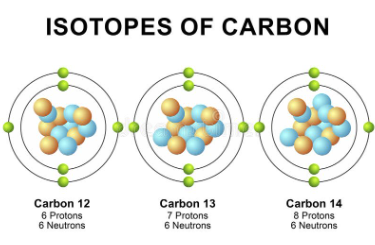
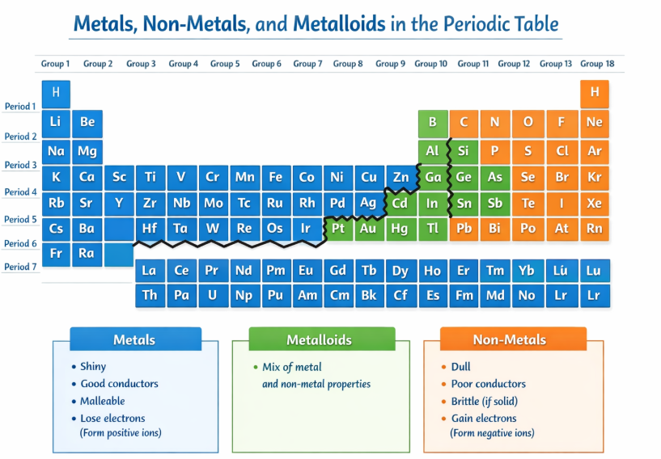
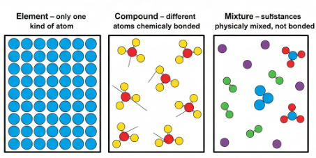
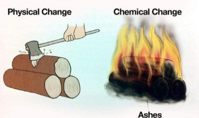

Matter & Atoms 𓏲ּ𝄢
States of Matter (Solid, Liquid, and Gas)
Matter is anything that has mass and takes up space, consisting of incredibly tiny particles called atoms and molecules.
States of Matter (Solid, Liquid, and Gas)
Matter is anything that has mass and takes up space, consisting of incredibly tiny particles called atoms and molecules.
Matter exists in three primary states: solid, liquid, and gas, each defined by how particles are arranged and move.

Atoms serve as the fundamental units of elements, retaining unique chemical traits even when isolated.
Atom structure
Atoms consist of a central nucleus housing protons (positively charged) and neutrons (no charge), surrounded by electrons (negatively charged). Historical models evolved: Democritus viewed atoms as indivisible; Thomson proposed electrons embedded in positive mass (plum pudding); Rutherford identified a dense nucleus with orbiting electrons; Bohr specified fixed orbits; modern quantum models describe electrons as probability clouds around the nucleus. Atomic number equals proton count, defining the element; mass number reflects protons plus neutrons.
Atomic Symbols
Symbols are concise notations from the periodic table, typically one or two letters, indicating the element. The atomic number (protons) appears above the symbol; average atomic mass (protons + neutrons) below. Neutral atoms balance protons and electrons.
Build an Atom
Isotopes
Isotopes share the same atomic number (protons) but differ in neutron count, yielding varied mass numbers. This results in stable or unstable (radioactive) variants without altering chemical reactivity.

Atoms & Molecules
Molecules arise when atoms chemically bond, forming either elemental molecules (same atom type) or compounds (different types). Bonding creates stable structures beyond individual atoms.
Build a moleculeAtoms & Ions
Ions form when atoms gain or lose electrons, disrupting charge balance: fewer electrons create positive cations; more electrons yield negative anions. This differs from neutral atoms where protons equal electrons.
The periodic table organizes all known elements by atomic number, revealing patterns in properties like metals versus non-metals.
Metals and Non-Metals
Metals occupy the left and center of the periodic table (left of the zigzag stair-step line from boron to astatine), showing traits like high electrical/thermal conductivity, malleability, ductility, luster, and tendency to lose electrons forming positive ions. Non-metals sit on the right side (including hydrogen), characterized by poor conductivity, brittleness, dullness, and gaining electrons to form negative ions; they often exist as gases, liquids, or brittle solids vital for biological roles. Metalloids (e.g., along the line like silicon, boron) blend properties of both.

Periods and Groups
Periodic table highlighting the location of nonmetal elements. Periods are horizontal rows (1-7), where elements gain protons left-to-right, increasing atomic size minimally while valence electrons fill shells, shifting from metals to non-metals across a row. Groups (columns, numbered 1-18) share vertical similarities: same valence electron count yields parallel chemical behaviors, like Group 1 (alkali metals) highly reactive or Group 17 (halogens) electron-seeking.
Elements, compunds, and mixtures, classify all matter based on composition and bonding.

Elements contain only one type of atom, cannot be broken down further, and represent pure substances like those listed in the periodic table. Compounds form when two or more different elements chemically bond in fixed ratios, creating new properties separable only by chemical reactions; mixtures combine substances physically without bonding, allowing variable ratios and physical separation.
Seperation Methods
Solutions (homogeneous, solute fully dissolved) separate via evaporation or distillation; colloids (particles dispersed but not settled, like milk) use centrifugation; suspensions (larger particles settle out) employ filtration or sedimentation.
Physical Changes
These alter forms without changing composition, are often reversible, and include processes like melting or mixing without chemical bonds breaking.
Chemical Changes
These rearrange atoms into new substances via reactions, typically irreversible, involving bond breaking/forming like rusting or burning.

Chemical equations must equal atoms on both sides; adjust coefficients (not subscripts) to balance.
Quick Practice
Balance the equation:
Fe + O₂ → Fe₂O₃
Acids turn litmus red (pH 1-6), bases turn litmus blue (pH 8-14); universal indicators show pH color gradients, with 7 neutral.